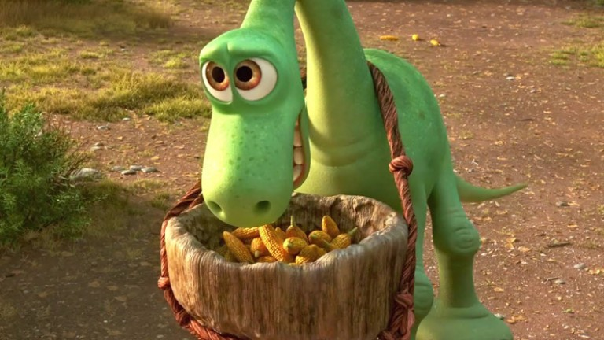
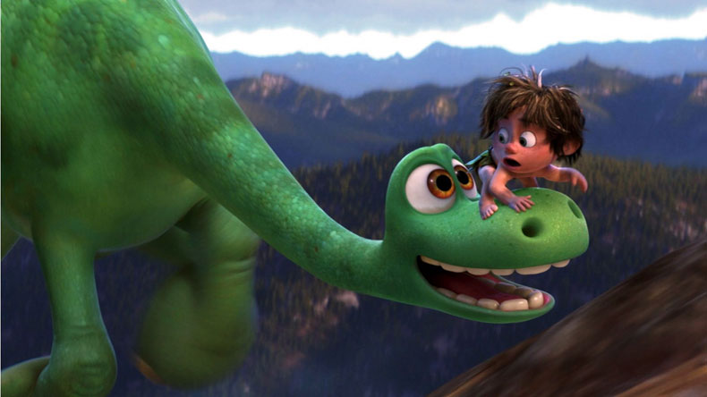
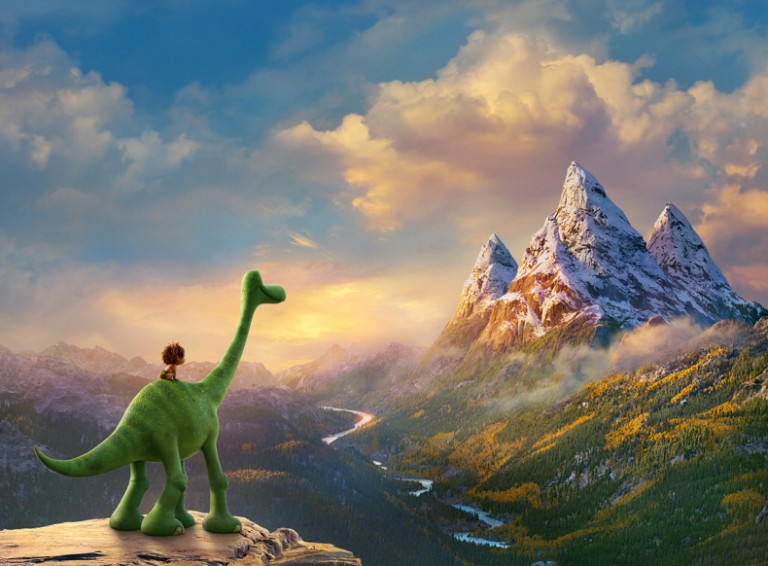

«دایناسور خوب» دومین انیمیشن استودیوی پیکسار در سال ۲۰۱۵ بود که بهطرز ظالمانهای توسط منتقدان و تماشاگران مورد بیلطفی قرار گرفت. درحالی که اصلا این حقش نبود. زومجی در این شماره از «گیشه»، این فیلم را بررسی میکند.
یکی از داستانهای غمانگیز سینمای ۲۰۱۵، استقبال کم از «دایناسور خوب» بود. فیلم اگرچه حدود ۱۵۰ میلیون بیشتر از بودجهاش فروخت، اما به عنوان اولین شکست تجاری پیکسار در جایگاه آخر جدول ردهبندی آثار این استودیو قرار گرفت و انگار نه انگار که فیلمی از پیکسار بزرگ عرضه شده. همه خیلی زود آن را فراموش کردند! اما آیا واقعا فیلم از لحاظ هنری نیز همینقدر بد است و لیاقت این نامهربانیها را دارد؟ زبانتان را گاز بگیرید! «دایناسور خوب» درست چند ماه بعد از «پشتورو»، یکی از شاهکارهای مطلق پیکسار و مشکلاتی که در مرحلهی تولید طولانیمدتش پیش آمد، عرضه شد. اما بدون پایین آوردنِ انتظاراتم و بدون هیچ اغراقی باید بگویم «دایناسور خوب» نه تنها بد نیست، بلکه یکی از بهترین و متفاوتترین آثار پیکسار است که فرمول جادویی تکرارشونده در آثار این استودیو را بهطرز بینقصی اجرا میکند و لحظاتی را خلق میکند که فقط در خاصترین انیمیشنهای چندلایهی دنیا یافت میشوند.
آخه، میدانید چه شده؟ بعضی از منتقدان بعد از اکران فیلم گفتند که «دایناسور خوب» به عنوان یک فیلم کودکانه عالی است، فیلم پیچیدگی و عمق همیشگی پیکسار را ندارد و بیشتر با هدف جلب نظر بچهها و سرگرمی یک بعد از ظهر خانوادگی ساخته شده است. اما واقعا برعکس چنین تفکری حقیقت دارد. آره، شاید نوآوری و خلاقیتهای فیلم بهاندازهی مثلا «داستاناسباببازی» بدیع و شگفتانگیز نیست و شاید داستان فیلم در سطحِ «پشتورو» فلسفی و پیچیده نمیشود، اما پُر بیراه نگفتهام اگر بگویم در طول فیلم نه تنها در حد بهترین کارهای پیکسار خندیدم و لذت بردم، بلکه به همان اندازه اشک ریختم و غمگین شدم و همین «دایناسور خوب» را به جایگاه بلدمرتبهای در میان آثار این استودیو منتقل میکند. چون شاید خلق احساس و هیجان در «داستان اسباببازی» با آن هرجومرج زیبا و رنگارنگش کار آسانتری است اما رسیدن به چنان درجهای از تعامل و ارتباط با «دایناسور خوب» که حالوهوای جدیتر و متفکرانهتری دارد، سخت است. اما پیکسار در اوج سادگی به این امر دست پیدا میکند. «دایناسور خوب» ویژگیهایی دارد که در هیچ جای دیگر دنیای پیکسار پیدا نمیکنید: سادگی معصومانه و زیبایی طبیعی.
ما پیکسار را به عنوان یکی از استودیوهای منحصربهفرد هالیوود میشناسیم؛ استودیویی که برخلاف اکثر کمپانیهای پُرخرج آنجا، محصول تکراری و بیخاصیت تحویل مخاطب نمیدهد و هردفعه کنجکاویبرانگیز ظاهر میشود. «سادگی» ماموریت جدید پیکسار با «دایناسور خوب» بوده است و اگر این هدف را درک کنید، نهایت لذت را از فیلم میبرید. تا حالا دیده بودید انیمیشنی ساخته شود که سرشار از حس و حالِ فیلمهای مستقلِ بیکلامِ طبعیتگرا باشد؟ من که یادم نمیآید. اما «دایناسور خوب» این کار را میکند و از همین رو باید به آنهایی که فکر میکنند «دایناسور خوب» نوآوری خاصی انجام نداده و فقط یک انیمیشن پاپکورنی کودکانه است بگویم که از این زوایه به فیلم نگاه کنید. در حوزهی انیمیشنسازی این روزها که همهچیز در شلوغکاری و شوخیهای بیتوقف و سروصدا خلاصه شده و مینیونها از در و دیوار بالا میرود، پیکسار با «دایناسور خوب» خواسته کمی از این جریان عادتشده و تکراری دور شود و از موضوعات داستانی عمیق فاصله بگیرد و سراغ داستانی کهن برود و آن را در اوج صدای آرامشبخشِ رودخانه و جیکجیک گنجشکها و هوهوی باد روایت کند. انیمیشنهای کمی در دنیا میتوانند چنین داستان سادهای را با این شدت از تاثیرگذاری روایت کنند و «دایناسور خوب» باز هم در این ماموریت موفق است. فیلم دربارهی دایناسور گردندرازی به نام آرلو و دوستیاش با یک بچهی غارنشین است. در دنیای «دایناسور خوب» این موجوداتِ غولپیکرِ ماقبلتاریخ به خاطر برخورد آن شهابسنگ مرگبار به زمین، نابود نشدهاند. از همین رو آنها در گذشتِ میلیونها سال متحول شده و تکامل یافتهاند و به جایی رسیدهاند که در کلبه زندگی میکنند. درخت قطع میکنند. کشاورزی و دامداری میکنند و مخازنشان را برای زمستان پُر میکنند. داستان فیلم چیزی است که بارها و بارها شنیدهاید: آرلو بین برادرانش دایناسورِ بیعرضه و ترسویی محسوب میشود و هنوز موفق نشده شجاعت و اهمیتش را ثابت کند. او باید از حصارهای امن خانه فاصله بگیرد و سختیها و خطرهای بیرون را تجربه کند تا در قالب مردی بالغ برگردد. اگر این خط داستانی کلیشهای بهدرستی و تاثیرگذاری روایت شود، مثل موتور ماشین کهنهای میماند که پس از تعمیر مثل روز اول کار میکند.
پیکساریها با چند خلاقیت کوچولو موتور داستان را روشن میکنند. اولی این است که برخلاف داستانهایی با موضوع «پسری با سگش» که انسانی با حیوانی که زبانش را نمیفهمد دوست میشود، در اینجا این آرلو است که نقش انسان را بازی میکند و بچهی غارنشین همان حیوان همراهش است. این شاید نوآوری خاصی به نظر نرسد، اما ما اینجا با پیکسار طرف هستیم و باید بدانید که آنها تا ته یک ایده را در نیاورند و به آن پر و بال ندهند، بیخیال نمیشوند. قبل از اینها اما فیلم مطمئن میشود که دو شخصیت بهیادماندنی دیگر نیز به فهرست کاراکترهای پیکسار اضافه کند. اسپات که مثل سگ شکاری حشراتِ غولپیکر ماقبلتاریخی را به دندان میگیرد، بهترین دستاورد «دایناسور خوب» است. چون شخصیتپردازی او به عنوان یک بچهی تنها و جداافتاده، هم دل آدم را کباب میکند و هم به عنوان یک منبع دانا تبدیل به شخصیت مهمی در زندهماندن گروه دونفرهی آنها در دنیای وحشی بیرون میشود. تعامل آنها علاوهبر اینکه از نظر ظاهری بامزه و شیرین است، بلکه رابطهی عاطفی بهشدت عمیقی نیز بینشان جریان دارد.
یکی از ویژگیهای کارتونهای پیکسار داستانگویی تصویری است و از آنجایی که دو شخصیت اصلی داستان زبان هم را بلد نیستند، فیلم تمرکز زیادی روی این عنصر میکند. مثلا در این زمینه باید به سکانس دلخراشی اشاره کرد که آرلو و اسپات از دست رفتههایشان را از طریق تصاویر و مراسمهای زیبای بدوی به یاد میآورند. البته اتمسفر غمگین فیلم با لحظات کمیک جذابی هم متعادل شده است. مثلا آرلو و اسپات در سفرشان به یک خانوادهی سهنفرهی تیرکس با لهجهی غلیظ جنوبی برخورد میکنند. آنها گاوچران هستند و فقط کافی است به نحوهی راه رفتن و حرف زدنشان دقت کنید، تا متوجهی توجهی وسواسگونهی پیکسار به جزییات شوید؛ مثلا پایینتنهی این تیرکسهای کابوی حالت اسب دارد و بالاتنهشان انسانگونه است و همین بهطرز عجیبی حتی نگاه کردن به آنها را نیز خندهدار میکند. این وسط، فیلم یک سکانس گفتگوی دور آتش با این تیرکسها دارد که یکی از نقاط طلایی فیلم است؛ چه از لحاظ منفجرشدن یکی از بمبهای خندهی فیلم و چه از لحاظ سخنرانی دوستداشتنی تیرکس بامعرفت ما دربارهی اهمیت مواجه شدن با ترس.
